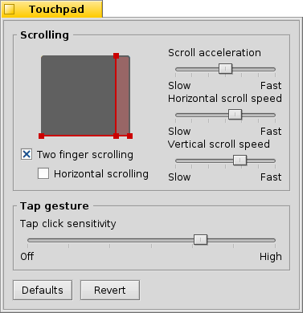

Português (Brazil)
Português (Brazil) Català
Català Deutsch
Deutsch English
English Español
Español Français
Français Italiano
Italiano Magyar
Magyar Polski
Polski Português
Português Română
Română Slovenčina
Slovenčina Suomi
Suomi Svenska
Svenska 中文 ［中文］
中文 ［中文］ Русский
Русский Українська
Українська 日本語
日本語 Touchpad
Touchpad
| Deskbar: | ||
| Localização: | /boot/system/preferences/Touchpad | |
| Definições: | ~/config/settings/Touchpad_settings |
Esta janela de diálogo oferece váriaas definições relacionadas ao touchpad que são interessantes quando executando o sistema a partir de um notebook.
Arrastando as linhas vermelhas verticais ou horizontais na representação do touchpad, definimos a área de rolagem (levemente avermelhada contra a área de toque geral, em cinza). Mover seu dedo naquela parte do touchpad irá mover as barras de rolagem de uma janela conforme o movimento.
À direita estão controles deslizantes para definir a aceleração de rolagem geral e a velocidade de rolagem vertical e horizontal.
A definição de aceleração decide o quão rápido uma lista rola ao se deslizar pela área de rolagem muito rápido. A velocidade de rolagem controla a velocidade geral ao usar a área de rolagem de maneira "normal".
Abaixo do gráfico do touchpad estão caixas de verificação para disponibilizar "Rolagem com dois dedos" para rolagem vertical e horizontal. Mova dois dedos em parelelo vertical ou horizontalmente para mover as barras de rolagem de uma janela. Ao menos para mim, funciona melhor se com um dedo da mão esquerda e um da mão direita.
Caso sinta-se confortável usando esta funcionalidade, pode dispensar a definição de áreas de rolagem e, ao invés disso, utilizar o touchpad inteiro para navegação normal.
Na base está outro controle deslizante para definir a sensibilidade do clique tocando o touchpad (tapping). Se seus toques continuam sendo ignorados, aumente a sensibilidade. Se o sistema registra cliques o tempo todo, enquanto tudo o que quer é mover o ponteiro do mouse, tente diminuí-la.
| redefine tudo para os valores padrão. | ||
| retorna às definições que estavam ativas quando iniciadas as preferências do Touchpad. |
Esta dica não está relacionada às preferências do Touchpad, mas se encaixa no tópico em geral:
Você sabia que pode fazer o arrastar e soltar apenas usando o touchpad, ou seja, sem usar os botões? Apenas faça um clique duplo sem levantar o dedo após o segundo clique. O ícone selecionado irá acompanhar o ponteiro do mouse e pode arrastá-lo pelo movimento do seu dedo. Levantar o dedo irá soltar o ícone.
Se seu dedo alcança a margem do touchpad enquanto arrasta um ícone, mas o ponteiro do mouse ainda não alcançou o fim da tela, como continuar arrastando o ícone? Assim que levantar o dedo, o ícone será solto.
Dependendo do seu hardware, existe uma funcionalidade elegante: apenas deixe seu dedo sem levantar na borda do touchpad. O ponteiro do mouse manter-se-á movendo no piloto automático.